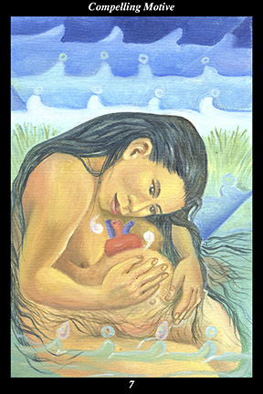

 | IMAGE: A female warrior who is close to giving birth bathes tranquilly in a lake. From her womb there emerges a heart, with whom she is having a dialog. The speech glyphs are colored white to signify their purity and dignity, the water drops are drawn as jade beads in order to portray the precious nature of that which sustains life. |
INTERPRETATION:
The female warrior symbolizes the way of nurturing and encouraging human nature that increases its sensitivity and loving-kindness. That she gives birth means that you bring something new into the world. The lake symbolizes the tranquility and serenity found in communing with nature and spirit. Bathing symbolizes purifying the thoughts, feelings, and intentions. Taken together, they symbolize beginning a new endeavor that you truly believe will bring
benefit to others. A heart emerging from the womb means that you love what you are creating—and feel loved by it. Having a dialog with the newborn heart means that you actively speak to it of your hopes and intentions—and actively listen to its vision of its purpose and potential. Taken together, these symbols mean that the spirit of your lifework sustains and cares for you and your unborn creation—and that your vision and purpose are part of a larger effort dedicated to protecting that which is most valuable.
ACTION:
The feminine half of the spirit warrior does not tarry at the crossroads. When the spirit of the heart calls, you must answer. Even if the calling comes when you are least prepared for it, it is your calling and cannot be ignored. Those who come across an acorn but see instead an oak tree have glimpsed the next part they have to play in the unfolding of creation. If you set aside other goals and whole-heartedly pursue this new direction, then you will find greater meaning, happiness, and success in life. It is essential to speak to the spirit of your endeavor, to treat it with respect and love and caring, to nurture it until it is whole and strong enough to emerge from the womb of
benefit: you find that which deserves to be preserved when you find an inner need that you share with others. It is likewise essential to listen to the spirit of your endeavor, to allow yourself to be respected and loved and cared for, to be nurtured until you are whole and strong enough to emerge from the womb of
benefit: just as an infant still in the womb may communicate with its mother, sharing its perceptions and protecting her with its intuitions, the spirit of your endeavor guides you to a future that is safe and filled with opportunity for growth and fulfillment.
INTENT:
Before acting externally, it is necessary to act internally—before making your decision known to others, it is necessary to incubate your plans in private. For this reason, it can be a frustrating time, one in which preparation can be mistaken for procrastination and gestation for inaction. This kind of impatience must be subdued by immersing yourself in the feminine spirit of water, which nourishes without bias. It can, however, also be time of timidity, one in which real procrastination can be mistaken for preparation and true inaction for gestation. Such hesitancy must be subdued by immersing yourself in the masculine spirit of water, which rushes headlong towards the sea without interruption. Once you have made the emotional decision to change direction, in other words, you must not reveal your intention until you are ready to act—but once you have revealed your intention, you must not allow anything to deter you from acting.
SUMMARY:
What you are trying to do is important, not just for your own future but that of others, as well. If you remain true to your loving and nurturing nature, you will enjoy real success. If you succumb to mistrustful and self-serving feelings, however, your hopes will not be fulfilled. Do not hesitate to pursue a new opportunity at this time, no matter how suddenly or unexpectedly it arises.
THE LINE CHANGES
1° Cautious to the point of being timid, accommodating to the point of being conciliatory—this serves well enough for now but you will need to be more decisive and purposeful in the time ahead. It is not the kind of confidence that can be faked, however. Build on your real strengths.
2° A truly great partnership—it balances the strengths of both. Harmony is not always consonant—it is often filled with necessary dissonance that resolves into a higher consonance. As if fated from the beginning, this partnership will
benefit you both and, more importantly, many, many others.
3° Assertive to the point of being aggressive, opinionated to the point of being inflexible—though you do not show this side of yourself to others, it is the underlying attitude responsible for your failures. You cannot fake a change of heart. Allow your burdens to make you more open.
4° Overall, you are contributing positively to a positive situation—you have endurance and admirable talents. There is, however, the perennial danger of becoming dependent on those you serve—don’t let the fact that you know this keep you from being wary. Roles must be preserved at all costs.
5° A short-term gain can often have long-term costs that negate what value there might have been at first. It is easy to get infatuated with an idea, goal, or person—but it is harder to get out of trouble than it was getting into it. Such advice falls on deaf ears, though, and no real harm results.
6° Others encourage you to take up a cause, appealing to your sense of justice and compassion. From where you stand you cannot see where this river takes you but your first inclination is to leap in. This may be a worthwhile cause but you must be prepared to sacrifice personally if you take it up.